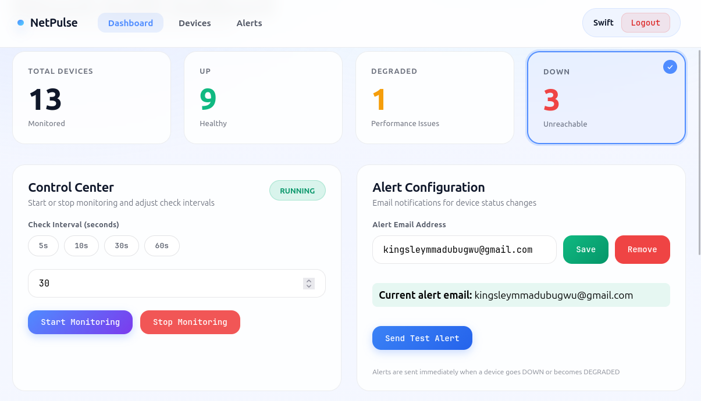
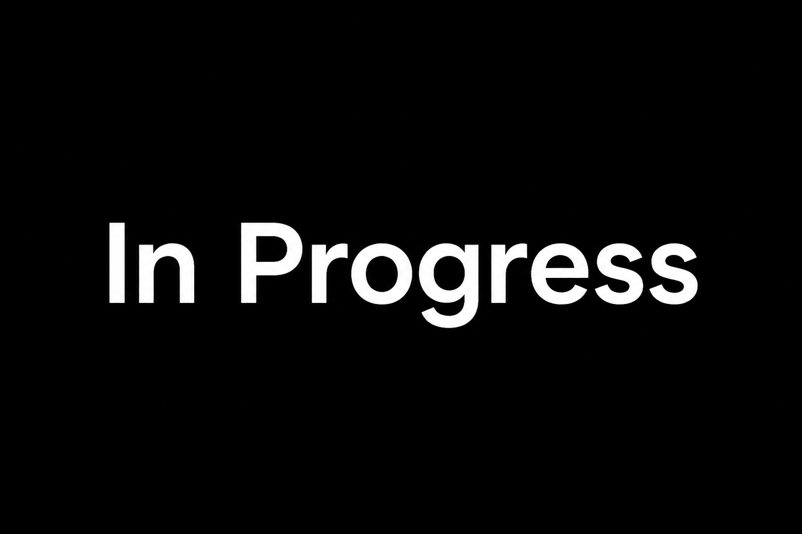
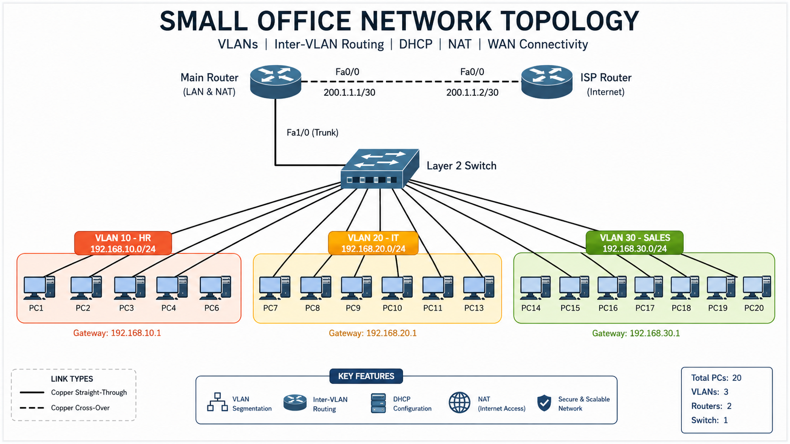

Hi There,
I'm Kingsley
Network Engineer & System Administrator
Supporting, monitoring, and improving network infrastructure and system reliability.

Supporting, monitoring, and improving network infrastructure and system reliability.
I'm an IT Engineer with 2+ years of hands-on experience in networking, system administration, and infrastructure support. I specialize in monitoring and securing network systems, with a growing focus on cybersecurity and automation.
I have worked on real-world projects involving network monitoring, system troubleshooting, and infrastructure reliability, alongside formal training in software engineering.
Key areas of focus:
Years Experience
Projects Completed
Certifications
Real-world implementations demonstrating technical expertise and problem-solving abilities

Built a lightweight network monitoring solution that tracks device availability through ICMP ping requests and delivers automated email alerts during outages or recovery events. Features a real-time web dashboard for infrastructure visibility.

Automated network configuration backup system using Python, Netmiko, and APScheduler. Will support scheduled backups, change detection, version control, and email notifications for network devices.

Designed and simulated a multi-department office network using Cisco Packet Tracer. Implemented VLAN segmentation, 802.1Q trunking, router-on-a-stick inter-VLAN routing, DHCP services, NAT overload, and WAN connectivity.
Cisco Certified Network Associate - In Progress
In ProgressAssociate Level - Study Phase
PlannedCybersecurity certification - Research Phase
PlannedMaintain, monitor, and troubleshoot network infrastructure, supporting system reliability and minimizing downtime. Monitor network performance using MikroTik WinBox and The Dude, proactively identifying and resolving connectivity issues. Provide technical support for internal users and assist with system administration tasks.
Completed a one-year industrial training program, assisting field engineers with network equipment installation, configuration, and maintenance at client sites. Gained hands-on experience with The Dude monitoring tool, VNC remote access, and basic router configuration. Participated in troubleshooting network issues, cable management, and documentation of IT procedures.
Real troubleshooting scenarios demonstrating systematic problem-solving methodology
Client reported complete internet outage across office network. Physical connectivity confirmed, but users unable to access online services or internal resources.
Reconfigured required VLAN settings through WinBox, restored proper network segmentation, verified DHCP relay functionality, and confirmed internet connectivity across client environment.
I am always interested in new opportunities and collaborations.